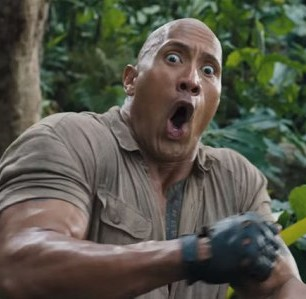
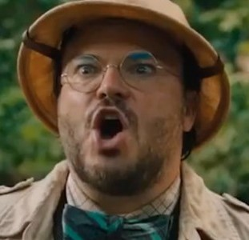
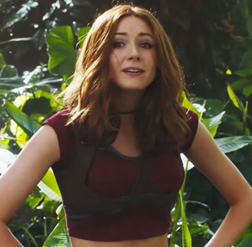
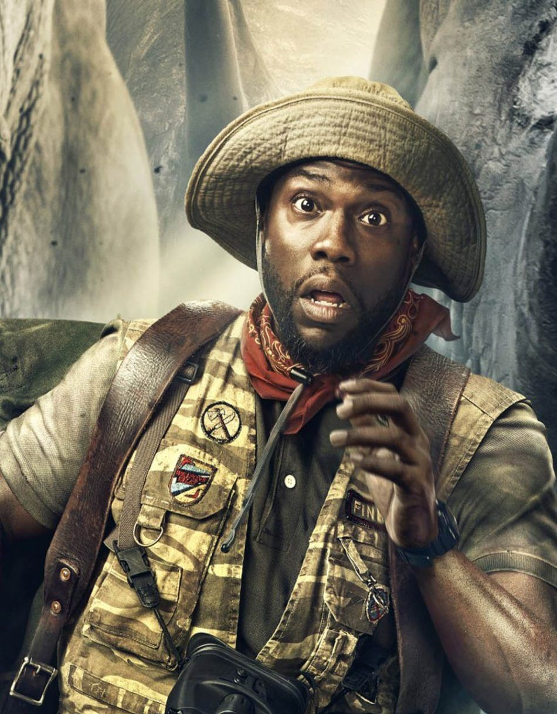
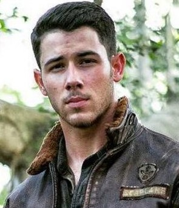

| Dwayne Douglas Johnson, also known by his ring name The Rock, is an American actor, producer, and semi-retired professional wrestler. | Dwayne Johnson |  |
|---|---|---|
|  | Jack Black | Thomas Jacob "Jack" Black, also known as "J.B.", "Jables", or "Jablinski" is an American actor, comedian, musician, songwriter, and YouTuber |
| Karen Sheila Gillan is a Scottish actress, voice actress, director, screenwriter and model. She gained popularity by playing Amy Pond, companion to the Eleventh Doctor, in the BBC One series Doctor Who | Karen Gillan |  |
|  | Kevin Hart | DescriptionKevin Darnell Hart is an American comedian, actor and producer. Born and raised in Philadelphia, Pennsylvania, Hart began his career by winning several amateur comedy competitions at clubs |
| Nicholas Jerry Jonas is an American singer, songwriter and actor. Jonas began acting in theater at the age of seven, and released his debut single in 2002 which caught the attention of Columbia Records where Jonas formed a band with his older brothers, Joe and Kevin, known as the Jonas Brother | Nick Jonas |  |